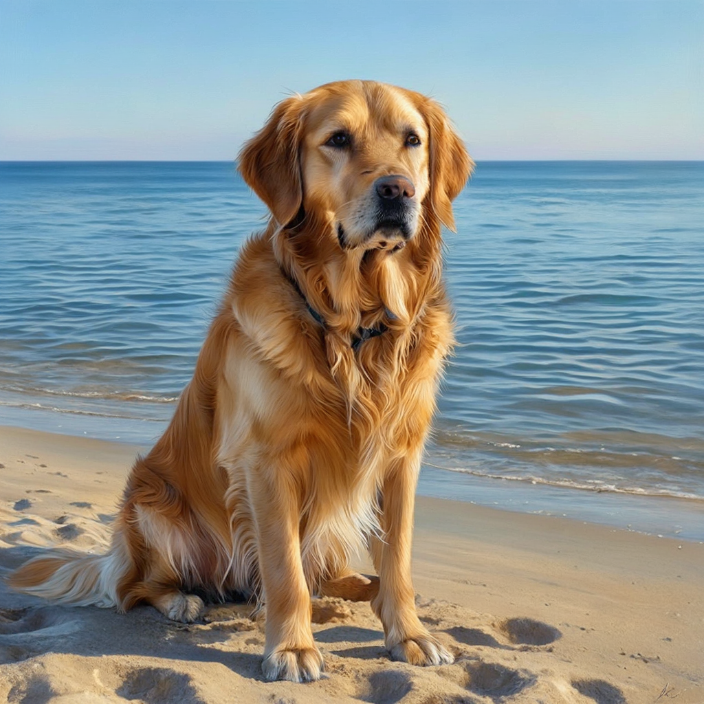
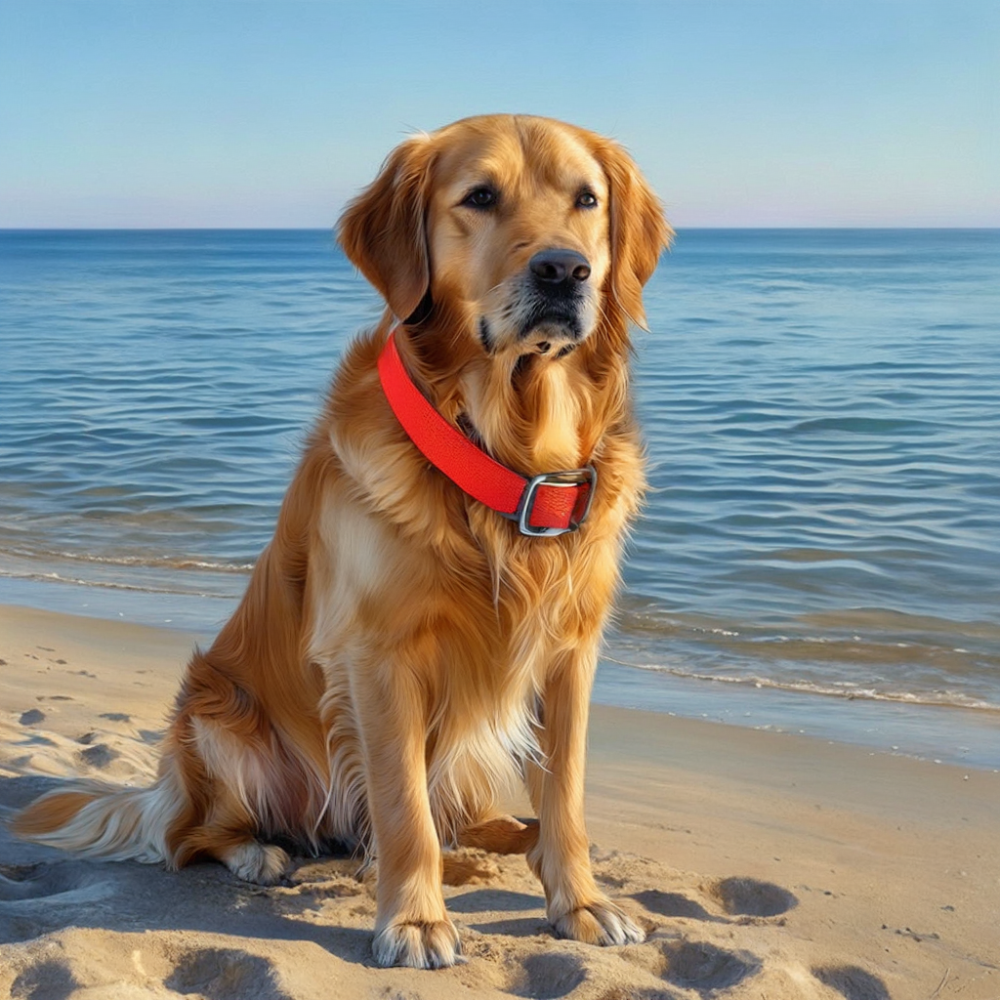
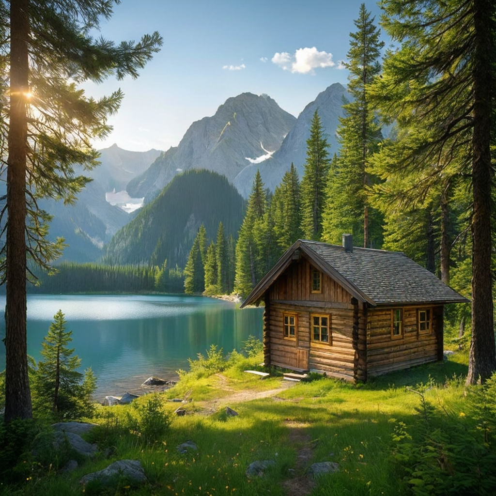
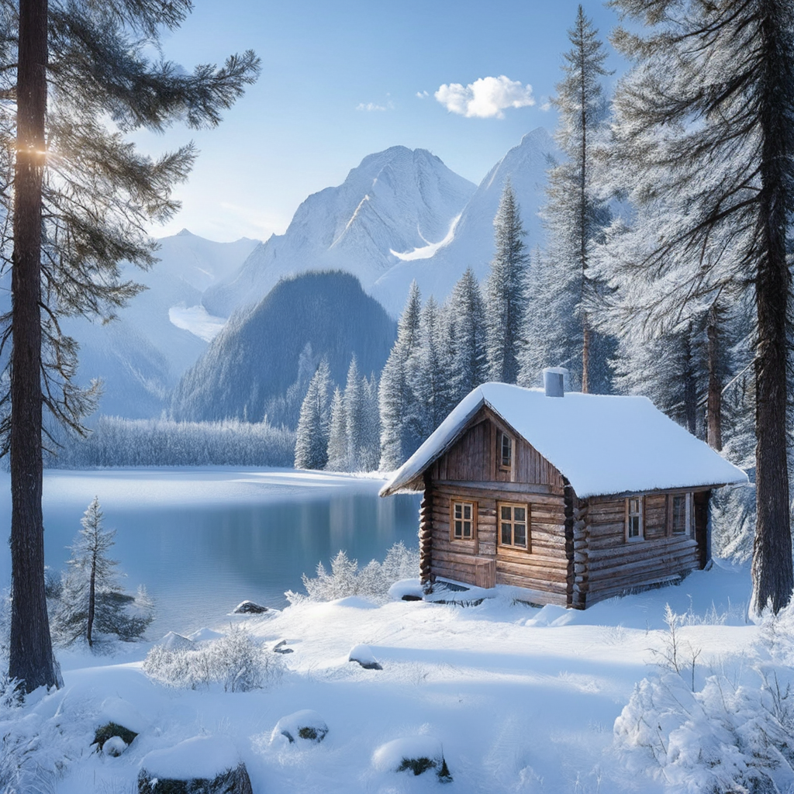

A single red ceramic coffee mug on a wooden table next to a green plant, soft window light, realistic photograph.
Edit: Change the red mug to blue. Keep everything else unchanged.
Answer: The mug is a vibrant red, and it is sitting on a wooden surface.
A golden retriever sitting on a sandy beach beside calm blue ocean water, clear daylight, realistic photograph.


Edit: Add a bright red collar around the dog's neck. Keep the dog and the beach unchanged.
Answer: A golden retriever sits on a sandy beach, gazing at the camera with a calm expression. The ocean waves gently lap at the shore behind it, and the sky is clear and blue.
A small wooden cabin beside a mountain lake surrounded by green pine trees, summer afternoon, realistic landscape photograph.


Edit: Change the scene to winter with snow covering the trees, cabin roof, and mountains.
Answer: The image features a rustic wooden cabin nestled in a serene forest setting. The cabin is surrounded by lush greenery, including tall pine trees and a tranquil lake in the background.